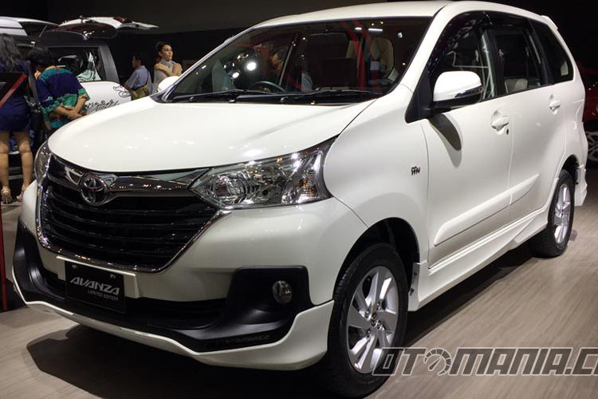

MPV Absolut Topang Penjualan Toyota
DONNY APRILIANANDA
KabarKabur.com - 27/09/2017, 10:01 WIB

Toyota Avanza Limited Editon, cuma tersedia 150 unit.(Febri Ardani/otomania.com)
KabarKabur.com - Toyota membukukan total wholesales (penjualan/ distribusi ke diler) 34.690 unit pada Agustus 2017. Pencapaian ini tercatat tumbuh 9,7 persen dibandingkan dengan bulan sebelumnya, 31.621 unit.
Pertumbuhan ini didorong oleh produk-produk andalan di segmen MPV seperti Avanza, Innova, dan Calya yang muncul sebagai tulang punggung penjualan dengan kontribusi mencapai 71,3 persen dari total wholesales Toyota.
Avanza misalnya, Agustus lalu terdistribusi 10.212 unit dengan market share 51,4 persen di segmennya. Kendati berada di segmen yang ketat dengan datangnya sejumlah pesaing kuat, Avanza tetap tumbuh 12,2 persen dibandingkan Juli.
Di periode yang sama, Innova membukukan 6.136 unit atau tumbuh 3,4 persen dibandingkan bulan sebelumnya. Sedangkan Calya mencatatkan 5.992 unit dan tumbuh 7,5 persen.
Catatan penting dalam perolehan penjualan ini adalah Avanza yang harus diakui masih menjadi pilihan utama dan kukuh sebagai market leader di segmennya. ”Mobil sejuta umat” itu mencatatkan total penjualan lebih dari 1,6 juta unit di pasar domestik sejak pertama kali dihadirkan pada akhir 2003.
”Kinerja positif ini merupakan refleksi dari upaya Toyota yang berkomitmen tinggi memberikan Beyond Product, Beyond Technology, dan Beyond Service sebagai fondasi utama semangat Toyota Let’s Go Beyond,” kata Presiden Direktur PT Toyota-Astra Motor (TAM), Yoshihiro Nakata, dalam siaran resmi (26/9/2017).
Sepanjang tahun ini, TAM telah menghadirkan beberapa produk baru seperti Venturer, New Corolla Altis, New AGYA, Voxy, dan Fortune TRD yang telah ikut berkontribusi terhadap peningkatan penjualan bulanan.
”Kami berupaya menghadirkan produk-produk yang dapat menjawab kebutuhan masyarakat yang kerap berkembang seiring meningkatnya taraf dan kualitas hidup,” kata Wakil Preswiden Direktur TAM Henry Tanoto.
penulis :Donny Apriliananda
Editor :Agung Kurniawan